两套完整31类NB reference与四套DEV/TEST解卷积均完成并达到预先冻结的技术收敛规则。TEST显示K32数量校准不足、低丰度检出很弱，并有来源特异的困难阴性误分配；去除P07T未改变这一结论。当前不支持将本方案直接用于真实Visium的K32定量试运行。本轮未拟合真实空间切片。
本次按明确授权排除18,182个范围外旧参考上皮，使用281,851个候选成员、完整31类标签。原BLOCKED源于上一版范围规则冲突，不是生物学验证失败。Epi_other指冻结范围内其他上皮，不等于MP10-low。没有真实Visium切片拟合。
| model_type | reference | split | epochs | converged | n_observations | n_genes |
|---|---|---|---|---|---|---|
| NB_RegressionModel | MAIN | TRAIN | 250 | True | 135860 | 11230 |
| Cell2location | MAIN | DEV | 9000 | True | 9120 | 11230 |
| Cell2location | MAIN | TEST | 9000 | True | 8400 | 11230 |
| NB_RegressionModel | NO_P07T | TRAIN | 250 | True | 131630 | 11230 |
| Cell2location | NO_P07T | DEV | 9000 | True | 9120 | 11230 |
| Cell2location | NO_P07T | TEST | 9000 | True | 8400 | 11230 |
依用户明确授权，派生reference采用旧参考全部158,152个非Epithelial成员与123,699个冻结上皮成员的并集，排除18,182个冻结范围外旧上皮。排除理由统一为outside_frozen_discovery_scope；其中18,120个早期清理细胞的具体历史原因仍未核实，62个来自小群过滤。范围外成员的冻结cluster保持缺失，未被当作Epi_other、MP10-low、K32阴性或QC失败。原v5 BLOCKED记录保持不变；它是旧版范围规则冲突，不是生物学验证失败。
符合：候选集合281,851个唯一cell_id，31类；Epi_K32完整保留3,282个冻结成员，Epi_other为120,417个。合法Cycling来源共4,344个冻结上皮成员保留，其中74个K32。原TRAIN/DEV/TEST的25/8/8个保守来源组保持不变，对应135,860/85,422/60,569个合格细胞和2,395/634/253个K32。MAIN使用全部135,860个TRAIN细胞；NO_P07T仅删除精确P07T来源4,230个细胞，剩131,630个、934个K32，P07N保留。两分支所有31类均有真实训练支持，最低每类146个；去P07T后仍有4个充分K32来源组。DEV/TEST各3个实际样本K32≥30，TEST充分阳性支持跨3个dataset。实际生成DEV 9,120和TEST 8,400个伪spot，分别覆盖593/634与253/253个留出K32；DEV未抽到的41个仍是合格冻结成员。TEST有12个样本、8个保守组，其中GSE326225仅能评价阴性、PRJNA662018无TEST来源。患者身份未独立核验，不称患者独立发现验证。
存在可供模型使用的描述性表达差异，但不足以据此判定恢复通过。共同使用11,230个TRAIN筛选且空间可用的非MT基因。MAIN中K32/other signature均值比：ELOVL5约21.79、INSIG1约17.90、ACSS2约11.80、SREBF2约3.09、FASN约2.62；NO_P07T相应约10.20、13.56、9.76、2.58、2.55。固定支持面板9/11保留，HSD17B7和HMGCS1不满足全部63张既定feature清单的严格共同可用规则。log1p后K32与other的Pearson相关为0.884/0.867；两套K32 signature相关0.970。去P07T仍明显改变ELOVL5、ACSL3、ABHD3等强度。所有相关和fold change均为描述性诊断，没有新样本级DEG显著性解释，也未为降低相关性删除其他TME类别。
当前不能支持可靠定量恢复。MAIN/NO_P07T样本等权K32 MAE为1.666/1.657个细胞，RMSE为2.958/2.938；真实阳性spot的MAE为2.810/2.836、平均偏差为−1.512/−1.607。数量校准斜率仅0.326/0.319，K32/上皮比例MAE为0.289/0.283。总上皮MAE为7.105/7.212，说明存在更广泛的上皮数量校准问题。MAIN DEV冻结统一均值阈值8.367393后，TEST总体recall仅4.60%/4.24%。S1真K32=1、2在低/中深度检出均为0，高深度MAIN仅2.5%/2.1%；真K32=16且80%上皮时，高深度检出76%/66%，MAIN平均估计约8.89，仍严重低估，低/中深度检出均为0。纯K32=20的高深度控制两分支检出100%，MAIN均值约11.71、上皮内比例约0.972；这一极端控制的比例恢复不代表混合spot数量校准通过。阳性K32的90%后验区间覆盖仅8.77%/8.00%，不能解释为已校准的不确定性。模拟阳性比例按spot合并为39.64%，样本等权为31.08%；precision和recall不代表真实空间性能。
有明显的伪丰度和来源特异误认，不能只看总体FPR。冻结阈值下MAIN/NO_P07T样本等权总体FPR为0.96%/0.76%。MAIN高深度C17、NMF-high非K32、UCell-high非K32的样本等权预测K32均值分别约3.43、1.72、2.30；对应检出FPR约1.11%、2.42%、0%，C14/C7在本次测试未出现超过阈值的检出。UCell-high的0%检出不等于没有错误分配。高深度纯上皮阴性总体样本等权FPR为8.33%；其中InhouseData|T4463209a的10/10个纯上皮K32=0重复均阳性，平均伪K32=13.73，技术重复的经验q95=15.09。同一来源NMF-high非K32高深度FPR为26.67%（8/30）；HRA003620_BC-24的C17高深度FPR为10%（3/30）。这些是特定来源的模拟失败，不是新增独立患者证据。18,182个范围外上皮未混入阴性真值。
数量恢复不足和困难阴性失败在去P07T后仍保留。两分支使用完全相同的TEST counts、真值、基因、标签顺序、主要先验、随机种子和同一阈值。NO相对MAIN的总体MAE仅变化−0.009个细胞，阳性MAE反而增加约0.027，检出率从4.60%降至4.24%；这不是一个已经通过且能宣称P07T独立的定量验证。配对预测均值变化最大之一为HRA_NC-24（约−0.220个细胞）；T4463209a的MAE改善约0.163，但其高深度纯上皮阴性误认仍存在。状态强度诊断含5个样本、4个保守来源组，固定真K32=5和同一其他上皮/TME背景时，较高UCell组的估计通常更高：MAIN来源组等权高−低差约0.276至0.450，NO约0.275至0.482个细胞，依深度而变。探索性来源组signed-rank双侧p均0.125，来源数不足，不能宣称统计显著，也不能据此宣称无强度效应。高UCell组的原始RNA深度同时常更高，因此不能把偏移完全归因于程序强度本身。
结论为“当前不支持”：现有31类reference、共有基因和冻结参数方案尚未达到K32定量迁移所需的数量校准、低丰度检出及跨来源困难阴性控制。高深度纯K32极端控制可检出，不足以抵消实际混合与特定阴性来源的失败。模型训练和后验导出成功已单独确认；本结论针对当前冻结候选的参考迁移方案与既定模拟条件，不否认K32存在表达特征，也不代表识别了全部MP10-high细胞。K32标签来自既有全发现集，伪spot也未完整模拟scRNA到Visium的平台差异。本次没有根据TEST真值回调模型，没有启动任何真实切片拟合。
每个spot固定20个细胞；原始UMI求和后进行整数binomial thinning。深度目标为完整RNA counts，实际模型使用11,230个共有基因。
| split | depth_condition | n_spots | target_full_UMI | median_post_full_UMI | median_post_shared_UMI | n_unattainable |
|---|---|---|---|---|---|---|
| DEV | high | 3040 | 14967 | 1.497e+04 | 8758 | 0 |
| DEV | low | 3040 | 3146 | 3148 | 1843 | 0 |
| DEV | medium | 3040 | 7005 | 7003 | 4096 | 0 |
| TEST | high | 2800 | 14967 | 1.496e+04 | 8650 | 0 |
| TEST | low | 2800 | 3146 | 3145 | 1822 | 0 |
| TEST | medium | 2800 | 7005 | 7004 | 4047 | 0 |
| reference | n_spots | n_samples | n_source_groups | K32_MAE | K32_MAE_positive | K32_RMSE | K32_bias | calibration_slope | ratio_epithelial_MAE | FPR | recall | simulated_positive_prevalence |
|---|---|---|---|---|---|---|---|---|---|---|---|---|
| MAIN | 8400 | 12 | 8 | 1.666 | 2.81 | 2.958 | 0.284 | 0.3262 | 0.2886 | 0.009617 | 0.04602 | 0.3108 |
| NO_P07T | 8400 | 12 | 8 | 1.657 | 2.836 | 2.938 | 0.2405 | 0.3194 | 0.2835 | 0.007563 | 0.0424 | 0.3108 |
MAE/RMSE/偏差的单位为细胞。相关性仅辅助。precision/recall受本次模拟阳性比例影响，不能解释为真实空间性能。
| split | dataset | n_pseudospots | n_source_groups | n_positive_pseudospots | n_positive_source_groups | n_eligible_K32_groups_ge30 | status | patient_status |
|---|---|---|---|---|---|---|---|---|
| DEV | CNP0000460 | 1860 | 1 | 810 | 1 | 1 | POSITIVE_RECOVERY_EVALUABLE_WITH_LIMITED_UNVERIFIED_SOURCE_GROUPS | conservative source groups; not independently verified patients |
| DEV | GSE326225 | 0 | 0 | 0 | 0 | 0 | NO_PSEUDOSPOTS_IN_SPLIT | conservative source groups; not independently verified patients |
| DEV | HRA003620 | 3780 | 4 | 1740 | 4 | 1 | POSITIVE_RECOVERY_EVALUABLE_WITH_LIMITED_UNVERIFIED_SOURCE_GROUPS | conservative source groups; not independently verified patients |
| DEV | InhouseData | 1350 | 2 | 750 | 2 | 1 | POSITIVE_RECOVERY_EVALUABLE_WITH_LIMITED_UNVERIFIED_SOURCE_GROUPS | conservative source groups; not independently verified patients |
| DEV | PRJNA662018 | 2130 | 1 | 690 | 1 | 0 | POSITIVE_RECOVERY_EVALUABLE_WITH_LIMITED_UNVERIFIED_SOURCE_GROUPS | conservative source groups; not independently verified patients |
| TEST | CNP0000460 | 3720 | 3 | 1260 | 2 | 1 | POSITIVE_RECOVERY_EVALUABLE_WITH_LIMITED_UNVERIFIED_SOURCE_GROUPS | conservative source groups; not independently verified patients |
| TEST | GSE326225 | 510 | 2 | 0 | 0 | 0 | NEGATIVE_ONLY_NO_POSITIVE_RECOVERY_EVALUATION | conservative source groups; not independently verified patients |
| TEST | HRA003620 | 2100 | 1 | 1020 | 1 | 1 | POSITIVE_RECOVERY_EVALUABLE_WITH_LIMITED_UNVERIFIED_SOURCE_GROUPS | conservative source groups; not independently verified patients |
| TEST | InhouseData | 2070 | 2 | 1050 | 2 | 1 | POSITIVE_RECOVERY_EVALUABLE_WITH_LIMITED_UNVERIFIED_SOURCE_GROUPS | conservative source groups; not independently verified patients |
| TEST | PRJNA662018 | 0 | 0 | 0 | 0 | 0 | NO_PSEUDOSPOTS_IN_SPLIT | conservative source groups; not independently verified patients |
| dataset | reference | n_spots | n_samples | n_source_groups | K32_MAE | K32_MAE_positive | K32_RMSE | K32_bias | calibration_slope | ratio_epithelial_MAE | FPR | recall | simulated_positive_prevalence |
|---|---|---|---|---|---|---|---|---|---|---|---|---|---|
| CNP0000460 | MAIN | 3720 | 5 | 3 | 1.479 | 2.415 | 2.545 | 0.2545 | 0.3142 | 0.2479 | 0 | 0.02418 | 0.2481 |
| GSE326225 | MAIN | 510 | 2 | 2 | 0.2191 | NaN | 0.4588 | 0.2191 | NaN | 0.05405 | 0 | NaN | 0 |
| HRA003620 | MAIN | 2100 | 2 | 1 | 2.36 | 3.286 | 3.705 | -0.5641 | 0.3013 | 0.2911 | 0.002941 | 0.03922 | 0.4861 |
| InhouseData | MAIN | 2070 | 3 | 2 | 2.48 | 2.886 | 3.862 | 0.9416 | 0.2599 | 0.511 | 0.03651 | 0.07239 | 0.5055 |
| CNP0000460 | NO_P07T | 3720 | 5 | 3 | 1.462 | 2.494 | 2.535 | 0.1875 | 0.305 | 0.2354 | 0 | 0.02222 | 0.2481 |
| GSE326225 | NO_P07T | 510 | 2 | 2 | 0.2728 | NaN | 0.5303 | 0.2728 | NaN | 0.06902 | 0 | NaN | 0 |
| HRA003620 | NO_P07T | 2100 | 2 | 1 | 2.37 | 3.38 | 3.76 | -0.6616 | 0.2953 | 0.2818 | 0.004902 | 0.03725 | 0.4861 |
| InhouseData | NO_P07T | 2070 | 3 | 2 | 2.429 | 2.816 | 3.768 | 0.9087 | 0.2669 | 0.5077 | 0.02698 | 0.06601 | 0.5055 |
| reference | scenario | depth_condition | FPR | predicted_K32_mean | predicted_K32_q95 |
|---|---|---|---|---|---|
| MAIN | S1_regular | high | 0.005556 | 1.308 | 2.731 |
| MAIN | S1_regular | low | 0 | 0.5603 | 1.273 |
| MAIN | S1_regular | medium | 0 | 0.844 | 1.807 |
| MAIN | S2_C14 | high | 0 | 1.041 | 1.721 |
| MAIN | S2_C14 | low | 0 | 0.4375 | 0.7913 |
| MAIN | S2_C14 | medium | 0 | 0.728 | 1.295 |
| MAIN | S2_C17 | high | 0.01111 | 3.43 | 5.937 |
| MAIN | S2_C17 | low | 0 | 1.435 | 2.609 |
| MAIN | S2_C17 | medium | 0 | 2.251 | 3.94 |
| MAIN | S2_C7 | high | 0 | 0.3461 | 0.5681 |
| MAIN | S2_C7 | low | 0 | 0.1994 | 0.3466 |
| MAIN | S2_C7 | medium | 0 | 0.25 | 0.4517 |
| MAIN | S2_NMF_high_non_K32 | high | 0.02424 | 1.716 | 3.4 |
| MAIN | S2_NMF_high_non_K32 | low | 0 | 0.7342 | 1.495 |
| MAIN | S2_NMF_high_non_K32 | medium | 0 | 1.108 | 2.16 |
| MAIN | S2_UCell_high_non_K32 | high | 0 | 2.303 | 3.914 |
| MAIN | S2_UCell_high_non_K32 | low | 0 | 0.9831 | 1.738 |
| MAIN | S2_UCell_high_non_K32 | medium | 0 | 1.538 | 2.658 |
| MAIN | S3_pure_epithelial | high | 0.08333 | 2.631 | 3.725 |
| MAIN | S3_pure_epithelial | low | 0 | 1.132 | 1.646 |
| MAIN | S3_pure_epithelial | medium | 0.025 | 1.645 | 2.298 |
| NO_P07T | S1_regular | high | 0.002778 | 1.292 | 2.696 |
| NO_P07T | S1_regular | low | 0 | 0.5511 | 1.231 |
| NO_P07T | S1_regular | medium | 0 | 0.8224 | 1.719 |
| NO_P07T | S2_C14 | high | 0 | 0.9455 | 1.558 |
| NO_P07T | S2_C14 | low | 0 | 0.4063 | 0.7086 |
| NO_P07T | S2_C14 | medium | 0 | 0.6705 | 1.154 |
| NO_P07T | S2_C17 | high | 0.01852 | 3.212 | 5.619 |
| NO_P07T | S2_C17 | low | 0 | 1.322 | 2.387 |
| NO_P07T | S2_C17 | medium | 0 | 2.094 | 3.727 |
| NO_P07T | S2_C7 | high | 0 | 0.4142 | 0.6686 |
| NO_P07T | S2_C7 | low | 0 | 0.2193 | 0.3632 |
| NO_P07T | S2_C7 | medium | 0 | 0.2891 | 0.4967 |
| NO_P07T | S2_NMF_high_non_K32 | high | 0.01818 | 1.735 | 3.405 |
| NO_P07T | S2_NMF_high_non_K32 | low | 0 | 0.7417 | 1.513 |
| NO_P07T | S2_NMF_high_non_K32 | medium | 0 | 1.118 | 2.172 |
| NO_P07T | S2_UCell_high_non_K32 | high | 0 | 2.235 | 3.803 |
| NO_P07T | S2_UCell_high_non_K32 | low | 0 | 0.9358 | 1.654 |
| NO_P07T | S2_UCell_high_non_K32 | medium | 0 | 1.476 | 2.572 |
| NO_P07T | S3_pure_epithelial | high | 0.08333 | 2.63 | 3.714 |
| NO_P07T | S3_pure_epithelial | low | 0 | 1.121 | 1.64 |
| NO_P07T | S3_pure_epithelial | medium | 0 | 1.622 | 2.294 |
| reference | N_K32 | depth_condition | n_samples | K32_MAE | K32_bias | recall | FPR |
|---|---|---|---|---|---|---|---|
| MAIN | 0 | high | 12 | 1.308 | 1.308 | NaN | 0.005556 |
| MAIN | 0 | low | 12 | 0.5603 | 0.5603 | NaN | 0 |
| MAIN | 0 | medium | 12 | 0.844 | 0.844 | NaN | 0 |
| MAIN | 1 | high | 8 | 1.443 | 1.138 | 0.025 | NaN |
| MAIN | 1 | low | 8 | 0.6423 | -0.1137 | 0 | NaN |
| MAIN | 1 | medium | 8 | 0.862 | 0.3849 | 0 | NaN |
| MAIN | 2 | high | 8 | 1.27 | 0.4508 | 0.02083 | NaN |
| MAIN | 2 | low | 8 | 1.148 | -0.9666 | 0 | NaN |
| MAIN | 2 | medium | 8 | 1.012 | -0.4067 | 0 | NaN |
| MAIN | 5 | high | 6 | 2.099 | -1.912 | 0 | NaN |
| MAIN | 5 | low | 6 | 3.74 | -3.74 | 0 | NaN |
| MAIN | 5 | medium | 6 | 3.01 | -3.01 | 0 | NaN |
| MAIN | 8 | high | 5 | 2.446 | -2.236 | 0.08 | NaN |
| MAIN | 8 | low | 5 | 5.614 | -5.614 | 0 | NaN |
| MAIN | 8 | medium | 5 | 4.256 | -4.256 | 0 | NaN |
| MAIN | 10 | high | 5 | 4.489 | -4.489 | 0 | NaN |
| MAIN | 10 | low | 5 | 7.717 | -7.717 | 0 | NaN |
| MAIN | 10 | medium | 5 | 6.407 | -6.407 | 0 | NaN |
| MAIN | 16 | high | 5 | 7.107 | -7.107 | 0.76 | NaN |
| MAIN | 16 | low | 5 | 12.23 | -12.23 | 0 | NaN |
| MAIN | 16 | medium | 5 | 10.3 | -10.3 | 0 | NaN |
| NO_P07T | 0 | high | 12 | 1.292 | 1.292 | NaN | 0.002778 |
| NO_P07T | 0 | low | 12 | 0.5511 | 0.5511 | NaN | 0 |
| NO_P07T | 0 | medium | 12 | 0.8224 | 0.8224 | NaN | 0 |
| NO_P07T | 1 | high | 8 | 1.397 | 1.071 | 0.01667 | NaN |
| NO_P07T | 1 | low | 8 | 0.6425 | -0.1574 | 0 | NaN |
| NO_P07T | 1 | medium | 8 | 0.8507 | 0.3128 | 0 | NaN |
| NO_P07T | 2 | high | 8 | 1.25 | 0.3423 | 0.01667 | NaN |
| NO_P07T | 2 | low | 8 | 1.195 | -1.032 | 0 | NaN |
| NO_P07T | 2 | medium | 8 | 1.03 | -0.4921 | 0 | NaN |
| NO_P07T | 5 | high | 6 | 2.185 | -2.015 | 0 | NaN |
| NO_P07T | 5 | low | 6 | 3.799 | -3.799 | 0 | NaN |
| NO_P07T | 5 | medium | 6 | 3.085 | -3.085 | 0 | NaN |
| NO_P07T | 8 | high | 5 | 2.692 | -2.444 | 0.12 | NaN |
| NO_P07T | 8 | low | 5 | 5.722 | -5.722 | 0 | NaN |
| NO_P07T | 8 | medium | 5 | 4.413 | -4.413 | 0 | NaN |
| NO_P07T | 10 | high | 5 | 4.595 | -4.595 | 0 | NaN |
| NO_P07T | 10 | low | 5 | 7.768 | -7.768 | 0 | NaN |
| NO_P07T | 10 | medium | 5 | 6.475 | -6.475 | 0 | NaN |
| NO_P07T | 16 | high | 5 | 7.227 | -7.227 | 0.66 | NaN |
| NO_P07T | 16 | low | 5 | 12.29 | -12.29 | 0 | NaN |
| NO_P07T | 16 | medium | 5 | 10.39 | -10.39 | 0 | NaN |
此表仅含S1常规TME混合；纯上皮和状态强度场景单列。K32=0的recall及阳性条件的FPR不可定义，保留缺失值。完整上皮比例分层见评价表。
| reference | Epi_other_MAE | total_epithelial_MAE | total_cell_MAE | posterior_90_interval_coverage_K32_positive | ratio_unstable_fraction |
|---|---|---|---|---|---|
| MAIN | 7.404 | 7.105 | 6.44 | 0.08769 | 0.001148 |
| NO_P07T | 7.482 | 7.212 | 6.456 | 0.07996 | 0.001423 |
阳性数量区间覆盖单列；正值连续先验的区间通常不含精确零，不能据此定义检出。
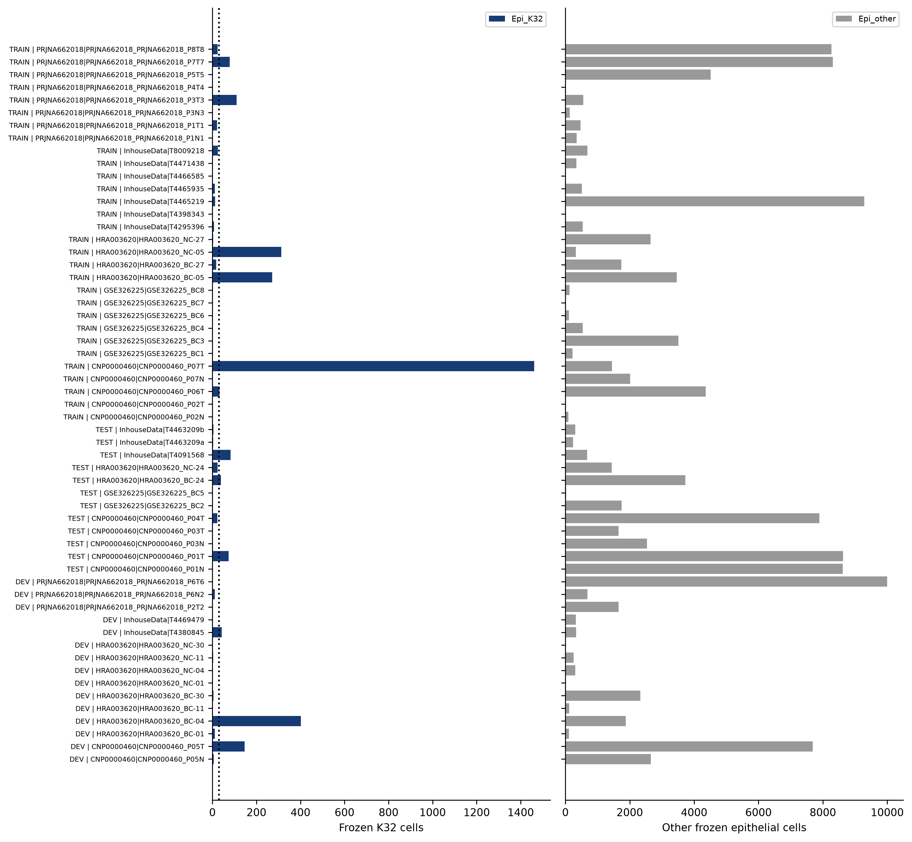
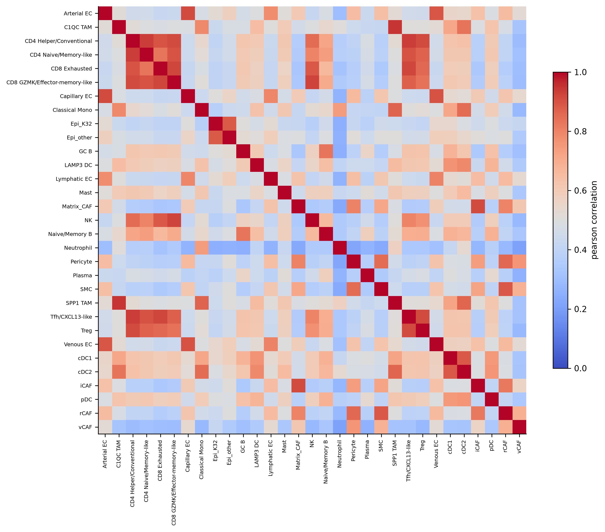
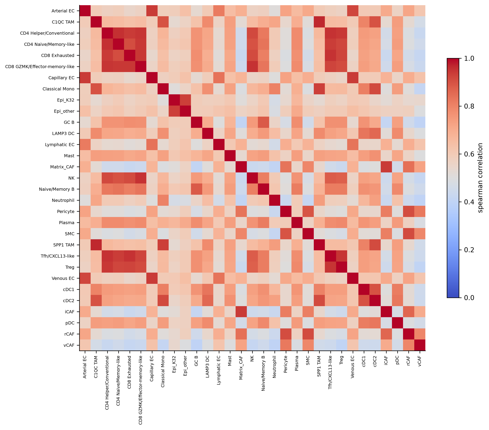
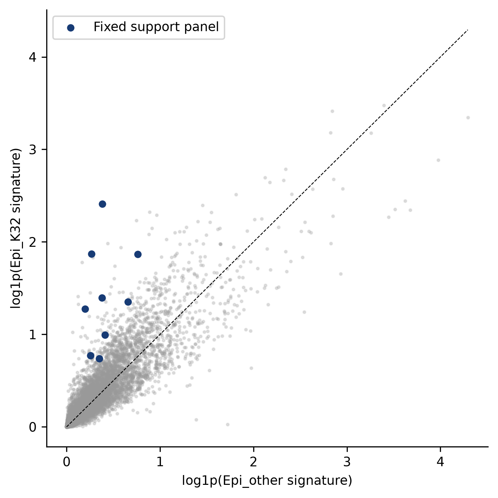
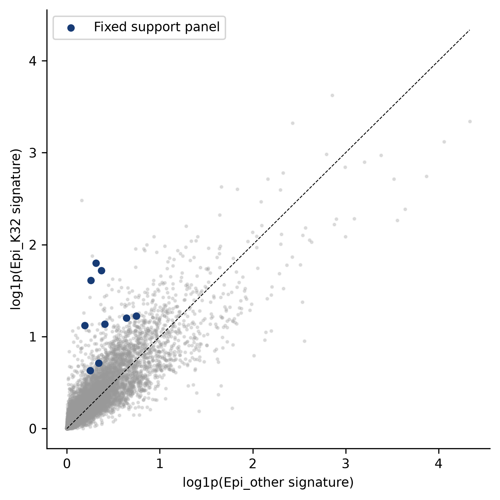
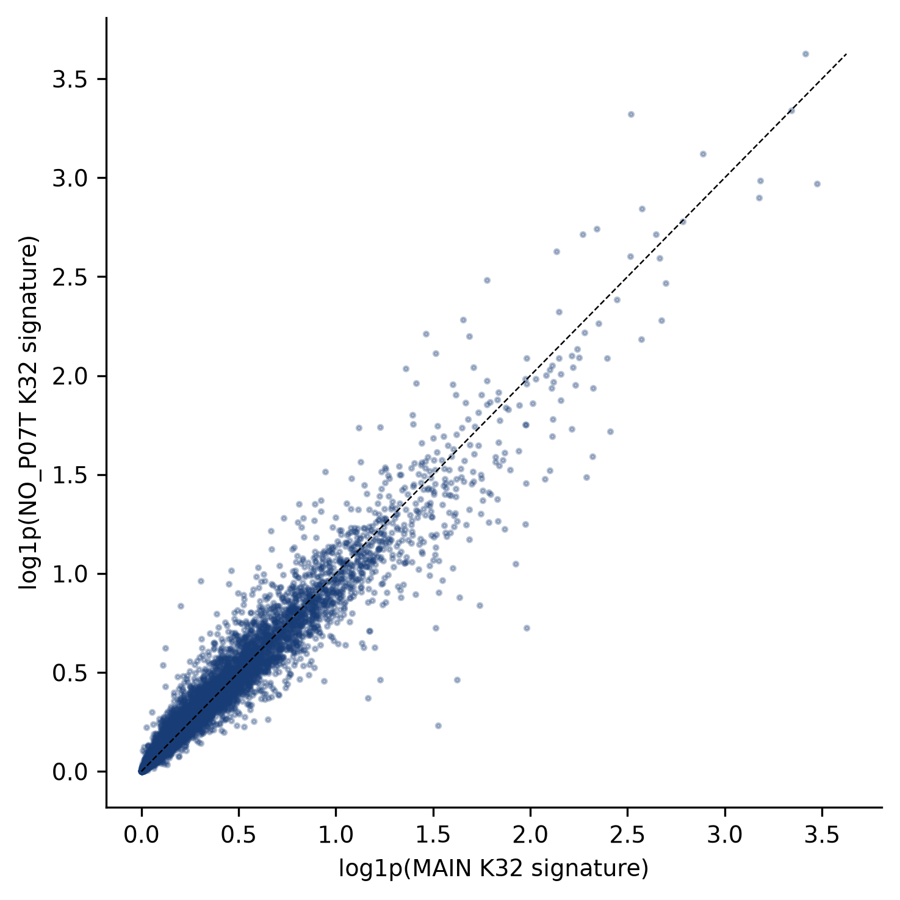
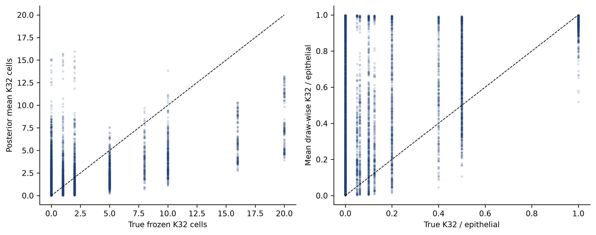
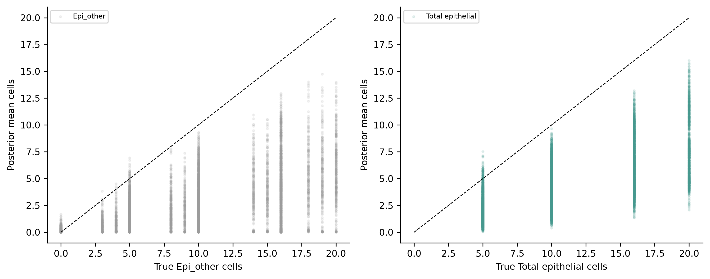
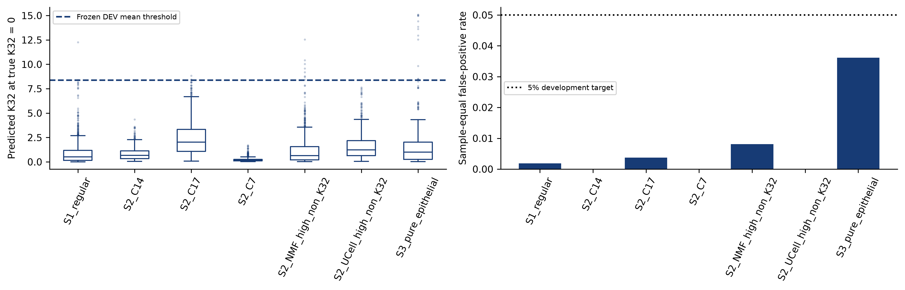
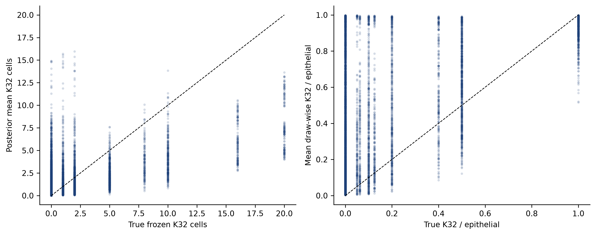
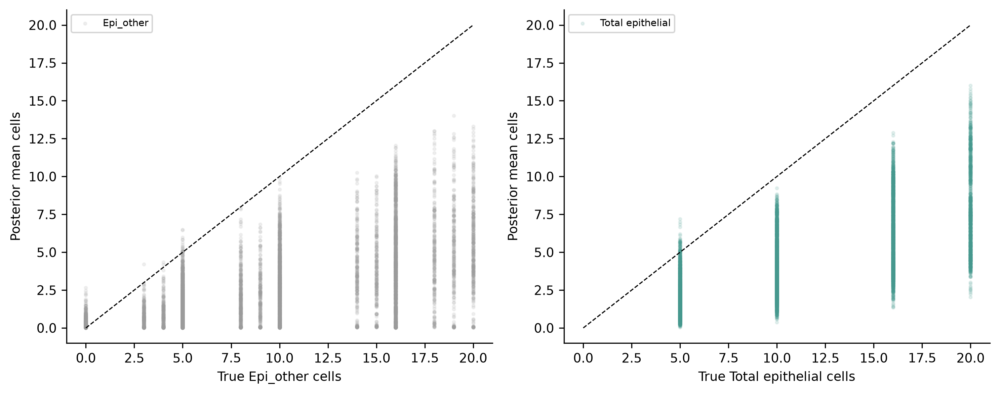
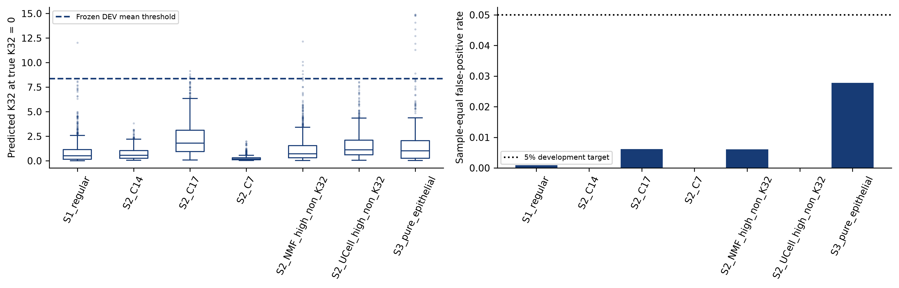
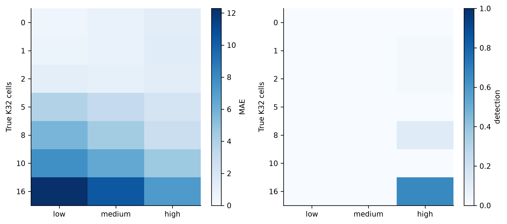
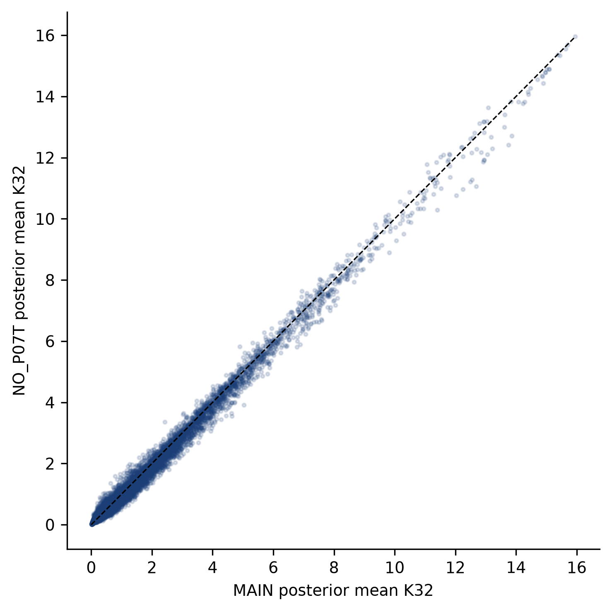
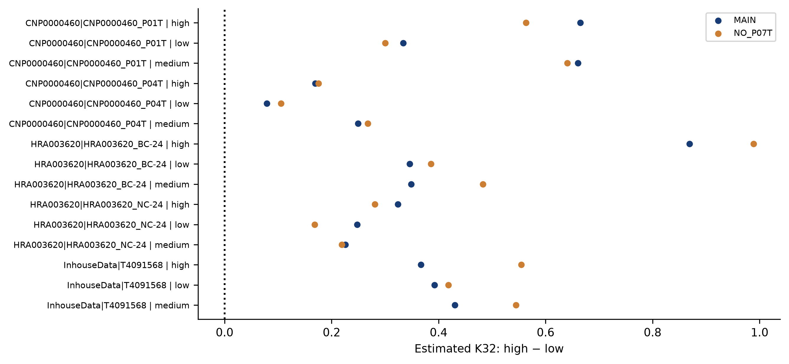